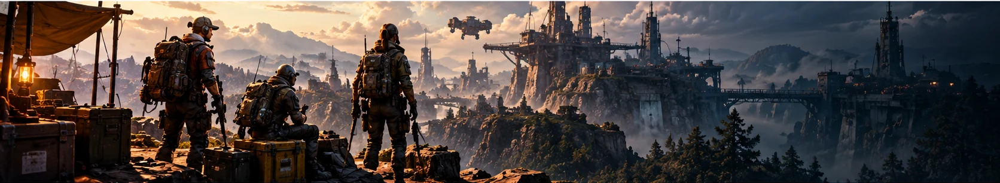
Amplification Guide
Amplification takes a fully upgraded tier IV weapon one step further, to level V. You spend a matching Amplification Module to activate it, then research and buy upgrades that change how the weapon behaves. This guide explains the system, where Raiders report finding each material, and how sure we are about every number.
How sure we are: Confirmed Community-reported Unverified Conflicting reports Data checked 2026-10-24.
What amplification is
Amplification is the level V weapon upgrade added in Frozen Trail 2.0. It raises maximum durability from 130 to 200 and opens a short tree of weapon-specific upgrades such as new fire modes, ammo types, magazines and optics. Confirmed
Fifteen weapons can be amplified at launch; Stiletto and Bantam cannot. Each weapon needs the module that matches its original rarity, from Mk. I for common weapons to Mk. V for legendary ones. Confirmed
Amplified weapons are only repaired with Amplified Fragments, and they drop to around 10% durability when you go down, so plan for repairs before you farm. Community-reported
Bring the weapon to tier IV, then spend one matching Amplification Module at the Gunsmith (level IV) to amplify it.
Each upgrade has a research project (5,000 research points, a task and ARC parts) and an install cost in amplification materials.
Repair amplified weapons with Amplified Fragments from recycling amplified gear.
Upgrade branches and restrictions
Some upgrades require another one first; for example, Rattler Drum Mag requires More Reload, and Aphelion Increased Burst requires Charged Burst. Confirmed
Some upgrades exclude each other. For example, Bettina Bigger Mag and Semi-Auto cannot both be active, and Hairpin Incendiary Rounds closes the Semi-Auto and Tracker Rounds branches. Confirmed
Upgrade choices are permanent; they cannot be reverted. The Amplification Hunt only lets you pick combinations that can exist together. Confirmed
Amplification Modules Mk. I – V
Each weapon rarity has its own module. The module is spent to activate amplification on one tier IV weapon.
Farming locations
Reports are still coming in after the Frozen Trail update. Every location below shows how sure we are, and no source we checked publishes drop rates.
ARC Frigate
ConfirmedA huge airborne ARC vessel added in Frozen Trail 2.0. It is a PvPvE encounter guarded by Hydra turrets, and its hull and cargo are the main confirmed source of Amplification Modules.
- Where
- Appears as a rotating map condition. Sources disagree on Riven Tides: one lists it, a game-file list excludes it. Neither lists Stella Montis. Conflicting
- Access
- No key needed. Board by riding one of the smaller Reclaimers up to the ship. The squad pulls three levers to raise the core, shoots the exposed Power Cores, then opens Cargo. Community-reported
- Loot
- Breach & Search ports on the hull and interior, plus the dropped cargo canister. Ports are picked clean quickly by other squads. Community-reported
- Tips
- Bring a squad and a grappling tool. The condition removes locked doors and Raider Hatches and lowers ground loot value. No drop rates are published. Community-reported
Fallen Emperor
ConfirmedThe downed ARC Emperor is the biggest landmark on Pendola Pass. Its interior is a key-gated run of randomized trial rooms ending in a hangar, and it is the second confirmed source of Amplification Modules.
- Where
- Western side of Pendola Pass. Community-reported
- Access
- Insert an Emperor Gateway Conduit (single-use key) into the socket at the base hatch. The conduit is crafted from its blueprint plus three ARC couplers that come from Redirection payloads. Confirmed
- Inside
- Around a dozen randomized trial rooms with breachable wall panels and carrier hatches; the final hangar has more containers. Opening the hatch is loud and a timer warning plays at 10 minutes left. Community-reported
- Also drops
- Emperor Modulator, needed for the Gunsmith IV upgrade that unlocks amplification. Confirmed
Emperor Payloads & Redirection
ConfirmedDuring the Redirection condition on Pendola Pass, Raiders search Damaged Emperor Relays for an Emperor Beacon and use it to call down a payload. The payload’s main container is the confirmed source of Pneumatic Actuators and Pressure Regulators.
- How it works
- Find an active Damaged Emperor Relay (shown on the map), take the Emperor Beacon from it, then call in the payload and defend it while it opens. Community-reported
- Name
- Most guides call it an Emperor Payload; two call it a Harvester Payload, and the wiki item page says Harvester Payload. Conflicting
- Also drops
- Emperor Gateway Conduit blueprint and the ARC couplers used to craft the Fallen Emperor key (not guaranteed). Confirmed
- Watch out
- Sources disagree on whether the couplers can be stored between raids. An Emperor Beacon is worthless after extraction. Conflicting
Pendola Pass
ConfirmedThe frozen mountain map added in Frozen Trail 2.0. It hosts the Fallen Emperor and the Redirection payloads, and one report places a Fluted Rotor Core in an exterior hatch.
- Name
- The in-game name is Pendola Pass. Confirmed
- Exterior find
- One guide found a Fluted Rotor Core in a sealed round wall hatch (Breach & Search) on a high exterior ledge above the snowy valley. Community-reported
- Doors
- Some doors are frozen shut and open with a fire source. Community-reported
- Storms
- Whether the Electromagnetic Storm can occur here is not verified. Unverified
Electromagnetic Storm
ConfirmedA weather condition with lightning strikes. Fossilized Lightning can appear at the strike point; it is not a container drop.
- How
- Watch for blue sparks a few seconds before a strike, then search the impact crater for a jagged stone. Community-reported
- Chance
- Community reports describe the chance per strike as low; no number is published. Community-reported
- Maps
- Which maps can roll the storm is not verified. Unverified
- Danger
- Strikes can strip shields. Community-reported
ARC Assessor
ConfirmedA large three-legged ARC landing platform that appears during the Close Scrutiny condition. Its containers are the only confirmed source of Assessor Matrix.
- Maps
- Dam Battlegrounds, Spaceport, Buried City and The Blue Gate. Confirmed
- Loot
- Three breachable containers; only one can be breached at a time. Breaching sounds an alarm that brings Vaporizers and Rocketeers, and the Assessor flies off if you wait too long. Community-reported
The Queen
ConfirmedBoss-class ARC that appears during Harvester events and drops the Queen Reactor.
- Loot
- Queen Reactors come from the wreck and leg loot. Frozen Trail moved higher-tier loot from the leg armor plates into the legs themselves. Confirmed
- Maps
- Our catalog lists Dam Battlegrounds, Spaceport and The Blue Gate from community drop tables. Confirmed
Matriarch
ConfirmedBoss-class ARC that drops the Matriarch Reactor. Destroy the frontal faceplates to expose the core, then loot the wreck quickly.
- Loot
- Exactly which part drops the reactor is not stated by our sources. Unverified
- Maps
- Our catalog lists Dam Battlegrounds, Spaceport and The Blue Gate from community drop tables. Confirmed
ARC Turbine
Community-reportedA flying ARC that lands mid-raid on three legs, exposing yellow canisters as weak points. Its remains are the reported source of Turbine Compressor.
- Loot
- Scavenge the destroyed Turbine. One tracker also lists ARC Courier and Harvester containers. Community-reported
- Maps
- Not fixed to one map. Community-reported
Recycling amplified gear
ConfirmedAmplified Fragments do not drop from containers. They come from recycling or salvaging amplified gear.
- Sources
- Recycling or salvaging an amplified weapon (a fully built Aphelion reportedly recycles to 35), or recycling an old Anvil Splitter mod (retired in 2.0). Confirmed
- Spare modules
- Four sources say a spare Amplification Module recycles into 7 Amplified Fragments; the wiki module pages say modules cannot be recycled. Conflicting
Amplification item library
15 materials shown
Amplification Module Mk. I
Spent once to activate amplification on one tier IV common weapon: Hairpin, Kettle, Rattler.
ARC Frigate, Fallen Emperor
View detailsAmplification Module Mk. II
Spent once to activate amplification on one tier IV uncommon weapon: Burletta, Il Toro.
ARC Frigate, Fallen Emperor
View detailsAmplification Module Mk. III
Spent once to activate amplification on one tier IV rare weapon: Anvil, Canto, Osprey, Rascal, Renegade.
ARC Frigate, Fallen Emperor
View detailsAmplification Module Mk. IV
Spent once to activate amplification on one tier IV epic weapon: Bettina, Hullcracker.
ARC Frigate, Fallen Emperor
View detailsAmplification Module Mk. V
Spent once to activate amplification on one tier IV legendary weapon: Aphelion, Equalizer, Jupiter.
ARC Frigate, Fallen Emperor
View details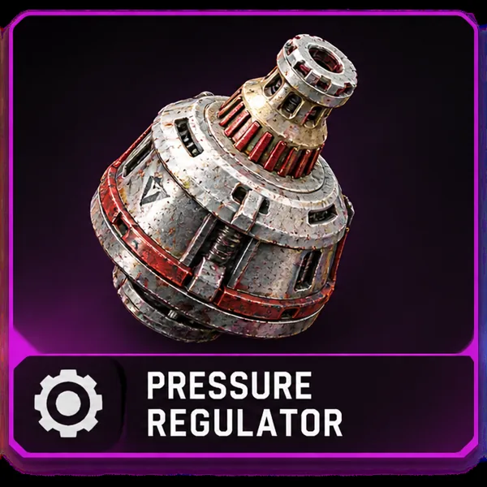
Pressure Regulator
Magazine and burst upgrades: Bigger Mag, Drum Mag and Increased Burst.
Emperor Payloads & Redirection, ARC Frigate, Fallen Emperor
View details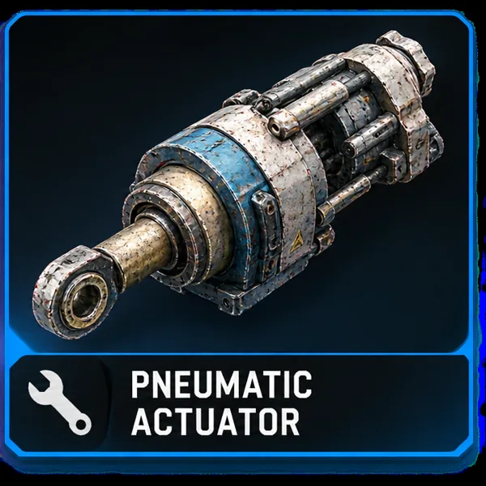
Pneumatic Actuator
Fire-mode upgrades: Semi-Auto, Full-Auto and High Velocity.
Emperor Payloads & Redirection, ARC Frigate, Fallen Emperor
View details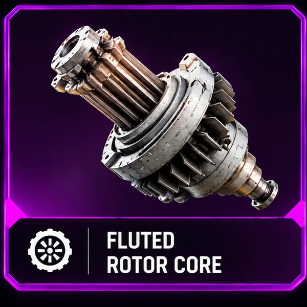
Fluted Rotor Core
Handling and optics upgrades: Sprint Shooting, Scoped and Ergonomic Bolt.
ARC Frigate, Fallen Emperor, Pendola Pass
View details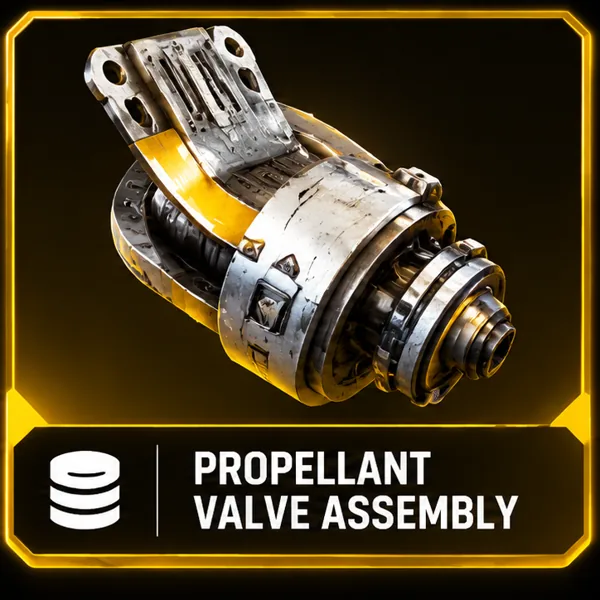
Propellant Valve Assembly
Reload and handling upgrades: More Reload, Mag Reload and Carbine Conversion.
ARC Frigate, Fallen Emperor
View details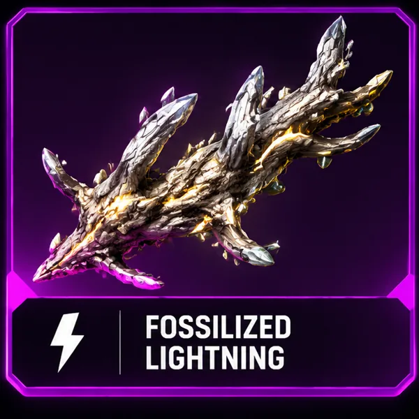
Fossilized Lightning
Incendiary and explosive upgrades: Incendiary Rounds, X-Rounds and Incendiary Grenades (3 each).
Electromagnetic Storm
View details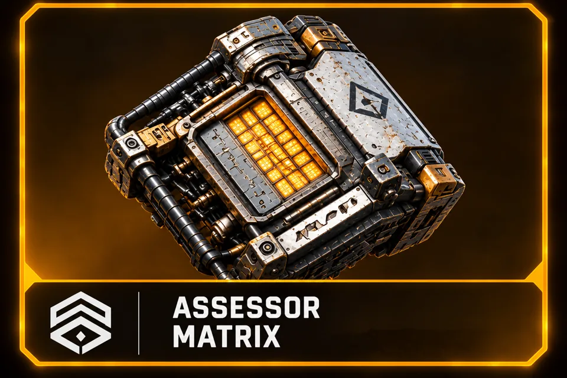
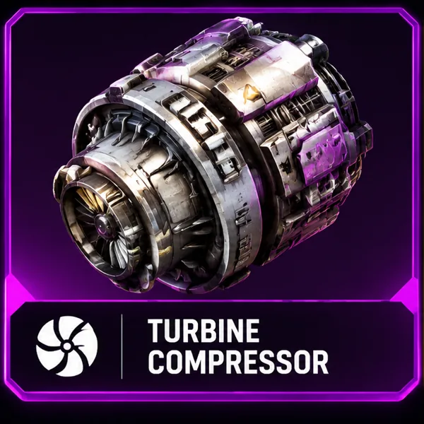
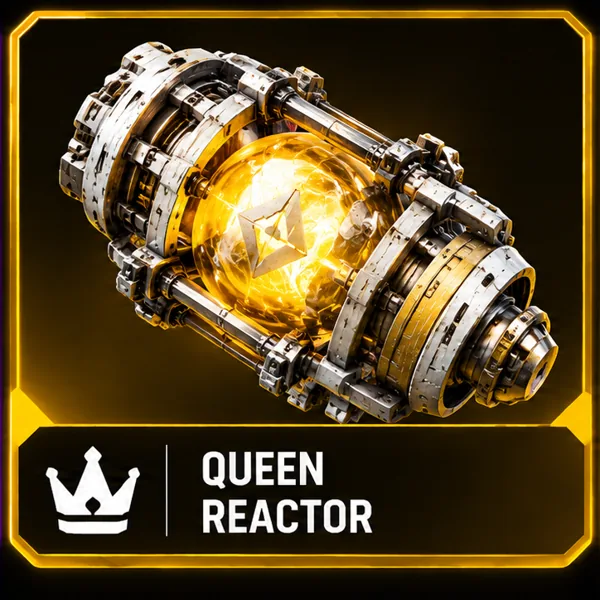
Queen Reactor
Burst Fire, Charged Burst and Ramping Damage, plus the Beam Resonance Tech research.
The Queen
View details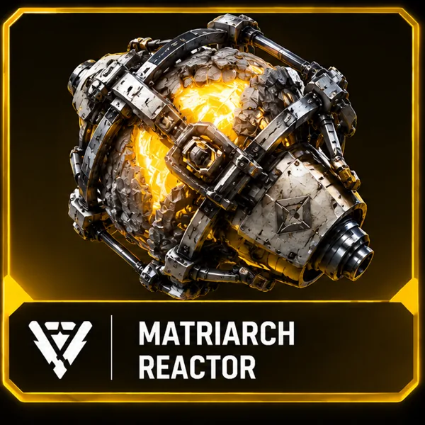
Matriarch Reactor
Tracker Rounds, plus the Shield Stress Testing research.
Matriarch
View details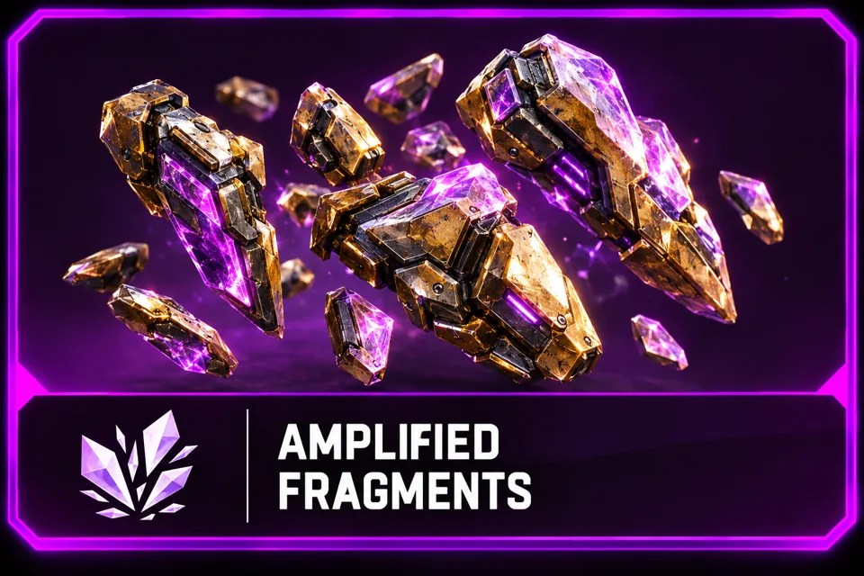
Amplified Fragments
Repairs amplified (level V) weapons; normal repair materials cannot. Cost grows with the number of upgrades installed.
Recycling amplified gear
View detailsUpgrade trees and quantities
Every quantity shows how sure we are: confirmed by two or more sources, reported by one, or conflicting. Branches marked “Excludes” cannot be active together, and upgrades cannot be reverted.
HairpinMk. I4 upgrades
| Upgrade | Materials | Requires | Excludes |
|---|---|---|---|
| Incendiary Rounds+5/s burn damage, +2s burn duration | ×3 Fossilized Lightning Community-reported | — | Semi-Auto, Tracker Rounds |
| Semi-Auto150% increased fire rate, 20% reduced headshot multiplier, 40% increased per-shot dispersion | ×3 Pneumatic Actuator Confirmed | — | Incendiary Rounds, Tracker Rounds |
| Sprint ShootingAllows firing while sprinting | ×3 Fluted Rotor Core Confirmed | Semi-Auto | — |
| Tracker Rounds+5s tracking duration (hit targets revealed for 5 seconds) | ×1 Matriarch Reactor Confirmed | — | Incendiary Rounds, Semi-Auto |
KettleMk. I3 upgrades
| Upgrade | Materials | Requires | Excludes |
|---|---|---|---|
| X-Rounds+6.5 Base Damage, 400% increased damage vs ARC Armor, 15% increased vertical/horizontal recoil, 30% reduced bullet velocity, 20% reduced fire rate, -4 magazine size | ×3 Fossilized Lightning Confirmed | — | Anti-Shield, Full-Auto |
| Anti-Shield100% increased damage vs Raider Shields, -2 Base Damage | ×3 Assessor Matrix Confirmed | — | X-Rounds |
| Full-Auto15% increased fire rate, 20% reduced headshot multiplier, 30% increased vertical/horizontal recoil, 30% increased max shot dispersion | ×3 Pneumatic Actuator Confirmed | — | X-Rounds |
X-Rounds also blocks the Magazine mod slot. Community-reported
Plan a Kettle huntRattlerMk. I3 upgrades
| Upgrade | Materials | Requires | Excludes |
|---|---|---|---|
| Incendiary Rounds+5/s burn damage, +2s burn duration (magazine stays 24) | ×3 Fossilized Lightning Confirmed | — | — |
| More Reload+2 bullets loaded at a time | ×2 Propellant Valve Assembly Confirmed | — | — |
| Drum Mag+40 magazine size (64 total), 50% increased vertical/horizontal recoil, 30% increased max shot/base/ADS dispersion, 10% reduced ADS speed | ×4 Pressure Regulator Confirmed | More Reload | — |
One community guide (aoeah) says Incendiary Rounds cannot be combined with the other two upgrades; the wiki and arcraidershub say it combines with both. Conflicting
Plan a Rattler huntBurlettaMk. II4 upgrades
| Upgrade | Materials | Requires | Excludes |
|---|---|---|---|
| Sprint ShootingAllows firing while sprinting | ×4 Fluted Rotor Core Conflicting | — | — |
| Full-Auto60% increased fire rate, -2 Base Damage, 60% reduced headshot multiplier, 50% increased vertical/horizontal recoil, 100% increased dispersion recovery time, 50% increased base/ADS dispersion | ×3 Pneumatic Actuator Community-reported | — | Burst Fire |
| Burst Fire+2 projectiles in burst (3-round burst) | ×2 Queen Reactor Community-reported | — | Full-Auto |
| Increased Burst+2 projectiles in burst (5-round), +3 magazine size | ×2 Pressure Regulator Community-reported | Burst Fire | — |
One community guide (aoeah) says Burst Fire blocks Sprint Shooting; arcraidershub says Sprint Shooting combines with either Burst Fire or Full-Auto. Sprint Shooting costs 4 Fluted Rotor Core in the wiki and boostingfactory, 3 on the Raider Network cheat sheet. Conflicting
Plan a Burletta huntIl ToroMk. II2 upgrades
| Upgrade | Materials | Requires | Excludes |
|---|---|---|---|
| More Reload+1 shell loaded at a time | ×2 Propellant Valve Assembly Community-reported | — | — |
| Slug Rounds-8 projectiles per shot, 900% increased projectile damage, 200% increased damage vs ARC Armor, 40% reduced base dispersion, 50% reduced bullet velocity | ×4 Turbine Compressor Community-reported | — | — |
AnvilMk. III2 upgrades
| Upgrade | Materials | Requires | Excludes |
|---|---|---|---|
| X-Rounds+5 Base Damage, 33% increased damage vs ARC Armor, 10% reduced headshot multiplier, 30% increased vertical/horizontal recoil, 50% reduced bullet velocity | ×3 Fossilized Lightning Confirmed | — | Anvil Splitter |
| Anvil Splitter+3 projectiles per shot, 30% reduced base dispersion, 90% reduced dispersion recovery time, 40% increased ADS dispersion, 70% reduced projectile damage, 40% reduced headshot multiplier | ×3 Turbine Compressor Confirmed | — | X-Rounds |
CantoMk. III3 upgrades
| Upgrade | Materials | Requires | Excludes |
|---|---|---|---|
| Incendiary Rounds+5/s burn damage, +2s burn duration | ×3 Fossilized Lightning Community-reported | — | — |
| Carbine Conversion50% reduced ADS recoil, 20% reduced max shot/per-shot/base dispersion, 10% reduced fire rate, 20% increased equip/unequip time | ×3 Propellant Valve Assembly Confirmed | — | Sprint Shooting |
| Sprint ShootingAllows firing while sprinting | ×4 Fluted Rotor Core Conflicting | — | Carbine Conversion |
Sprint Shooting costs 4 Fluted Rotor Core on the wiki, 3 on the Raider Network cheat sheet. Carbine Conversion and Sprint Shooting also block the Stock mod slot. Conflicting
Plan a Canto huntOspreyMk. III3 upgrades
| Upgrade | Materials | Requires | Excludes |
|---|---|---|---|
| Ergonomic BoltAllows bolt-action while scoped (also called 'Straight Bolt') | ×3 Fluted Rotor Core Confirmed | — | — |
| Tracker Rounds+5s tracking duration, 60% reduced bullet velocity | ×2 Matriarch Reactor Confirmed | — | Anti-Weak Point |
| Anti-Weak Point100% increased damage vs ARC Weak Points (reduced vs ARC armor plating) | ×2 Assessor Matrix Confirmed | — | Tracker Rounds |
RascalMk. III3 upgrades
| Upgrade | Materials | Requires | Excludes |
|---|---|---|---|
| High Velocity100% increased projectile velocity, 50% reduced ADS dispersion | ×2 Pneumatic Actuator Community-reported | — | — |
| Sprint ShootingAllows firing while sprinting | ×2 Fluted Rotor Core Community-reported | — | — |
| Incendiary Grenades+11.25/s burn damage, +5s burn duration, 40% reduced projectile damage, 15% reduced projectile velocity | ×3 Fossilized Lightning Community-reported | — | — |
RenegadeMk. III2 upgrades
| Upgrade | Materials | Requires | Excludes |
|---|---|---|---|
| More Reload+1 bullet loaded at a time (capacity stays 8) | ×2 Propellant Valve Assembly Confirmed | — | — |
| ScopedAdds a scope | ×4 Fluted Rotor Core Confirmed | — | — |
One community guide (aoeah) says More Reload and Scoped are either/or; the wiki and arcraidershub list no exclusion. Conflicting
Plan a Renegade huntBettinaMk. IV3 upgrades
| Upgrade | Materials | Requires | Excludes |
|---|---|---|---|
| Bigger Mag+15 magazine size (22 to 37) | ×3 Pressure Regulator Confirmed | — | Semi-Auto, X-Rounds |
| Semi-Auto+3 Base Damage, 20% reduced max shot dispersion, 20% reduced fire rate | ×3 Pneumatic Actuator Confirmed | — | Bigger Mag |
| X-Rounds+3 Base Damage, 25% increased damage vs ARC Armor, 20% increased vertical/horizontal recoil, 30% reduced bullet velocity, -4 magazine size | ×3 Fossilized Lightning Confirmed | Semi-Auto | Bigger Mag |
HullcrackerMk. IV2 upgrades
| Upgrade | Materials | Requires | Excludes |
|---|---|---|---|
| Incendiary Grenades+11.25/s burn damage, +5s burn duration, 40% reduced projectile damage, 50% reduced projectile velocity | ×3 Fossilized Lightning Community-reported | — | — |
| Mag ReloadRemoves the need to reload one projectile at a time | ×3 Propellant Valve Assembly Community-reported | — | — |
AphelionMk. V4 upgrades
| Upgrade | Materials | Requires | Excludes |
|---|---|---|---|
| Bigger Mag+6 magazine size | ×3 Pressure Regulator Confirmed | — | — |
| Incendiary Rounds+5/s burn damage, +2s burn duration | ×3 Fossilized Lightning Confirmed | — | — |
| Charged Burst+2 max projectiles in burst, +2 magazine size, -2.5 Base Damage, 60% increased vertical/horizontal recoil (hold to charge) | ×2 Queen Reactor Confirmed | — | — |
| Increased Burst+2 max projectiles in burst | ×2 Pressure Regulator Confirmed | Charged Burst | — |
EqualizerMk. V3 upgrades
| Upgrade | Materials | Requires | Excludes |
|---|---|---|---|
| Bigger Mag+30 magazine size | ×3 Pressure Regulator Community-reported | — | — |
| Ramping DamageDamage increases gradually while the laser stays on a valid target | ×3 Queen Reactor Community-reported | — | Anti-Weak Point |
| Anti-Weak Point67% increased damage vs ARC Weak Points, 60% reduced damage vs ARC Armor | ×2 Assessor Matrix Community-reported | — | Ramping Damage |
JupiterMk. V3 upgrades
| Upgrade | Materials | Requires | Excludes |
|---|---|---|---|
| Bigger Mag+5 magazine size (5 to 10) | ×3 Pressure Regulator Community-reported | — | — |
| ScopedAdds a scope | ×3 Fluted Rotor Core Community-reported | — | — |
| Ergonomic BoltAllows bolt-action while scoped (also called 'Straight Bolt') | ×3 Fluted Rotor Core Community-reported | — | — |
Open questions and sources
Needs checking in game
- Conflicting Burletta and Canto Sprint Shooting: 4 Fluted Rotor Core (wiki) vs 3 (Raider Network cheat sheet). The Hunt totals use 4.
- Conflicting Do spare Amplification Modules recycle into 7 Amplified Fragments? Four sources say yes; the wiki says modules cannot be recycled.
- Conflicting Eight upgrades (e.g. Bigger Mag, More Reload, Full-Auto) list no research project in game-file sources, but an older wiki page names one for each.
- Conflicting Mobile-Fire Grip Fittings research (Sprint Shooting): Skulker Drivers vs Skulker Targeters, and the quantity, differ between sources.
- Conflicting Some community guides list extra exclusions for Rattler, Renegade and Burletta that the wiki does not.
- Conflicting ARC Frigate maps: one source includes Riven Tides, a game-file list excludes it.
- Community-reported Propellant Valve Assembly and Fluted Rotor Core locations rest on tracker data and one report each.
- Unverified Which maps can roll the Electromagnetic Storm, and where the Matriarch drops its reactor, are not verified.
- Community-reported Effect descriptions come from the community wiki and guides, not from the game client.
- Confirmed No source publishes drop rates. We do not show any.
Sources (checked 2026-10-24)
- ARC Raiders Wiki: Amplified Weapons
- ARC Raiders Wiki item pages (Amplification Module, Fluted Rotor Core, Pressure Regulator, Pneumatic Actuator, Amplified Fragments)
- ArcRaidersHub: Amplified Weapons Guide
- ArcRaidersHub: Where to Find Amplification Modules
- timesaver.gg: Amplification Module farm
- timesaver.gg: Emperor Beacon / Redirection farm
- KeenGamer: All 15 amplified weapons
- Boosting Factory: Amplified weapons guide
- allthings.how: How amplified weapons work
- ARC Tracker item database
- MetaForge item database
- Frozen Trail 2.0 patch notes summary
Item illustrations are Raider Network artwork, not in-game renders. Unofficial fan site, not affiliated with Embark Studios.